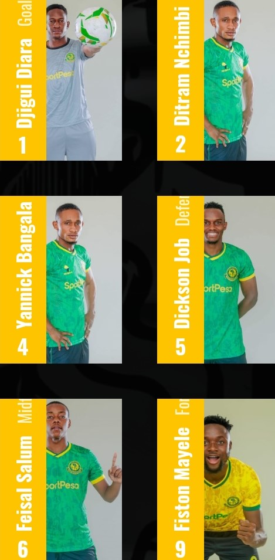
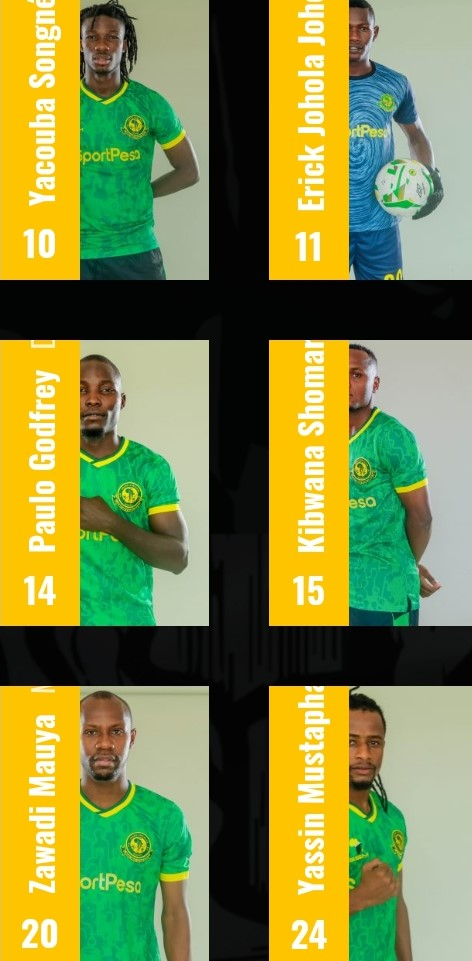
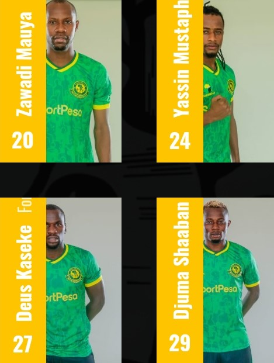

Young Africans Sports Club
TEAM
American football evolved from the sports of association football (soccer) and rugby football. Rugby football, like American football, is a sport where two competing teams vie for control of a ball, which can be kicked through a set of goalposts or run into the opponent's goal area to score points.
  